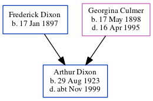

Arthur S Dixon 1923 - c1999
[ Home ] | [ Calendar ] | [ Surnames Index ] | [ Census Index ] | [ Family History ]A process engraver fine and the younger of 2 children of Frederick Dixon and Georgina Culmer, Arthur Dixon, the second cousin once-removed on the mother's side of Nigel Horne, was born in Edmonton, London, England on Aug 29, 19231,2,3. On Sep 29, 1939, he was living at 71 Tottenhall Road, Southgate, London, England1.
He died c. Nov 1999 in Medway, Kent, England3.
Parents
- Frederick John was born on Jan 17, 1897
- Georgina Hannah was born on May 17, 1898
Citations
- 1939 Register - Findmypast (was the son of the head of the household)
- England & Wales births 1837-2006 - Findmypast
- England & Wales deaths 1837-2007 - Findmypast
Media
England & Wales births 1837-2006 - BMD/B/1923/3/AZ/000356/007
England & Wales deaths 1837-2007 - BMD/D/1999/10/83042703
1939 Register - TNA/R39/0890/0890I/011/31
Family Tree
Generated by ged2site. Last updated on Jun 11, 2024